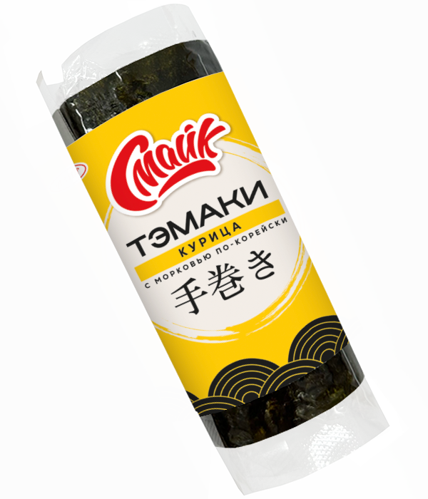

Тэмаки курица с морковью по-корейски

Состав: рис, филе куриное, морковь по корейски, творожный сыр, крабовое мясо, нори.
Масса нетто: 120 г.
Пищевая и энергетическая ценность в 100 г продукта (средние значения):
Белки – 4 г.
Жиры – 3,5 г.
Углеводы – 25 г.
Калорийность – 150 ккал / 630 кДж.